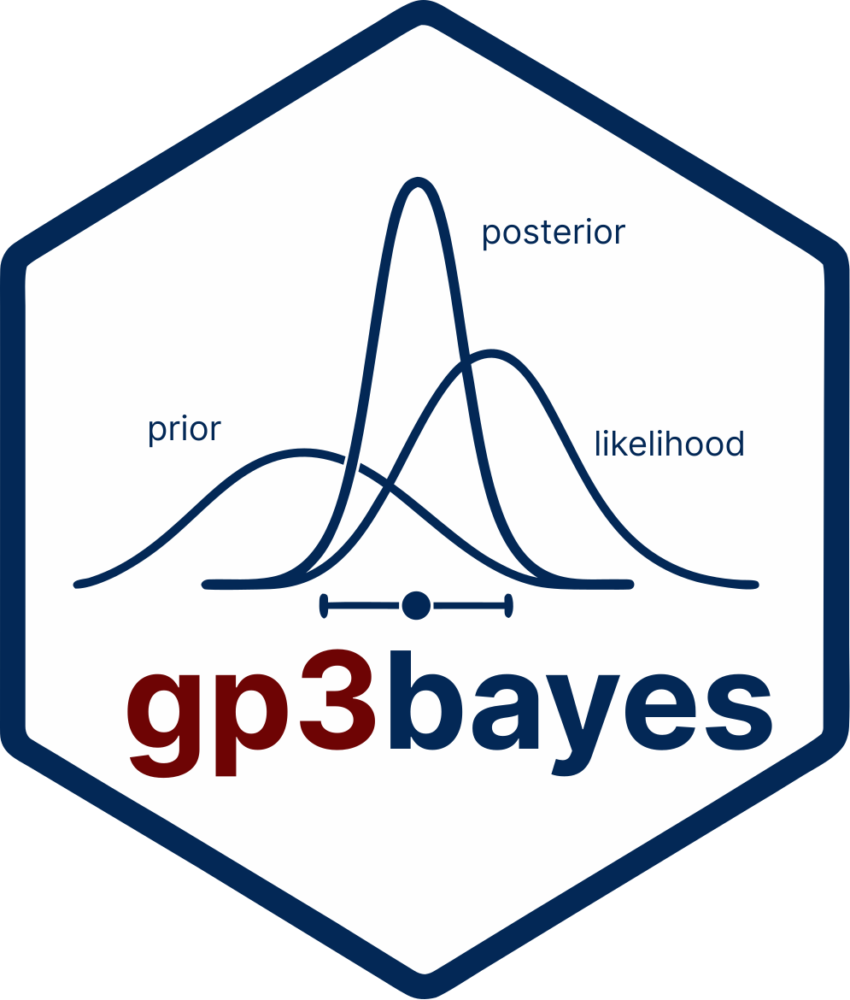
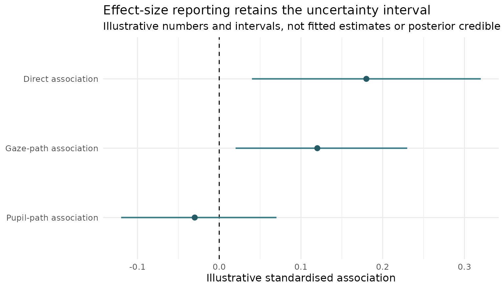
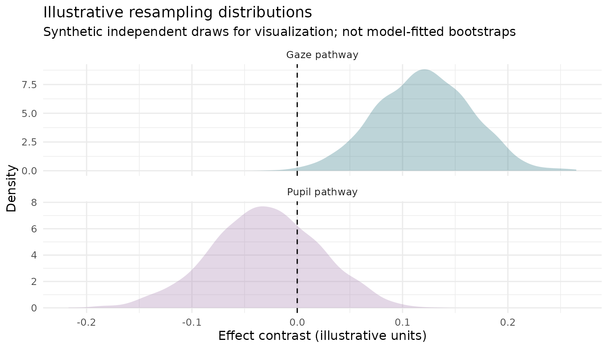
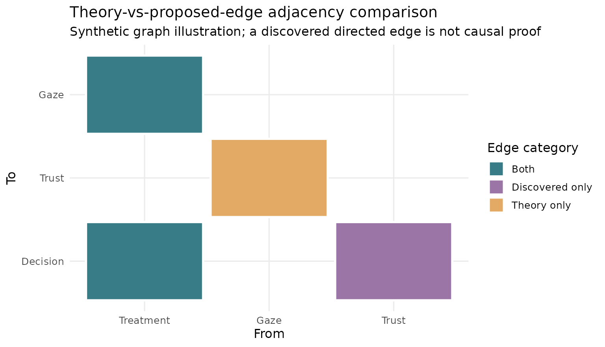
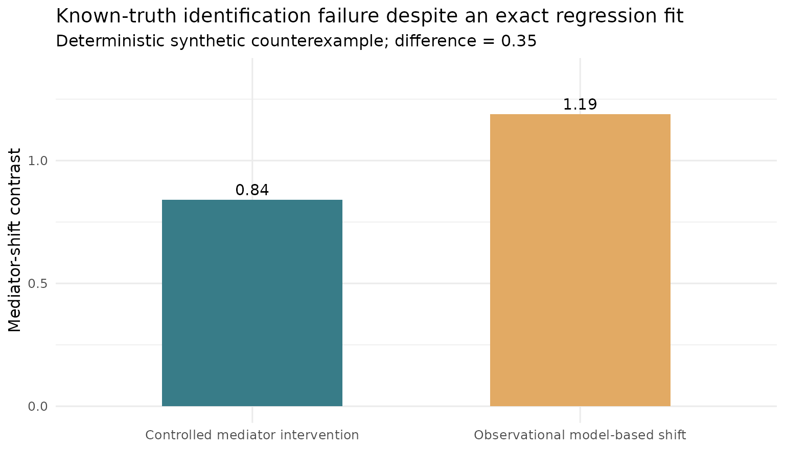

Mediation evidence gallery: contrasts, uncertainty, and identification
Source:vignettes/mediation-estimation-graphics-gallery.Rmd
mediation-estimation-graphics-gallery.RmdWhat the plots can, and cannot, establish
This reproducible article illustrates estimation-style visualizations
for experimental mediation research: reported effect intervals,
bootstrap distributions, graph-edge agreement, and an explicit
causal-identification failure. The graphics are inspired by the emphasis
on raw evidence and uncertainty in DABEST and by the
package’s existing evidence atlas. They are original, synthetic
examples produced with ggplot2; they are not posterior draws
from gp3bayes, and they do not constitute
evidence from an empirical study.
Figure 1. Effect estimates with user-supplied uncertainty intervals
effects <- data.frame(
estimand = factor(c("Direct association", "Gaze-path association",
"Pupil-path association"),
levels = rev(c("Direct association",
"Gaze-path association",
"Pupil-path association"))),
value = c(.18, .12, -.03),
lo = c(.04, .02, -.12),
hi = c(.32, .23, .07)
)
ggplot2::ggplot(effects, ggplot2::aes(y = estimand, x = value)) +
ggplot2::geom_vline(xintercept = 0, linetype = 2) +
ggplot2::geom_segment(
ggplot2::aes(x = lo, xend = hi, yend = estimand),
linewidth = .8, colour = "#387C88"
) +
ggplot2::geom_point(size = 2.5, colour = "#245B65") +
ggplot2::labs(
title = "Effect-size reporting retains the uncertainty interval",
subtitle = "Illustrative numbers and intervals, not fitted estimates or posterior credible intervals",
x = "Illustrative standardised association", y = NULL
) +
ggplot2::theme_minimal(base_size = 12)
No interval type is implied by the appearance of a horizontal bar. Always distinguish a frequentist confidence interval from a Bayesian credible interval, and a descriptive mediated association from a causally identified indirect effect.
Figure 2. Resampling distribution, not a posterior without a Bayesian model
resampling <- data.frame(
estimate = c(stats::rnorm(1800, .12, .045),
stats::rnorm(1800, -.03, .052)),
path = rep(c("Gaze pathway", "Pupil pathway"), each = 1800)
)
ggplot2::ggplot(
resampling, ggplot2::aes(x = estimate, fill = path)
) +
ggplot2::geom_density(alpha = .33, colour = NA) +
ggplot2::geom_vline(xintercept = 0, linetype = 2) +
ggplot2::facet_wrap(~path, ncol = 1, scales = "free_y") +
ggplot2::scale_fill_manual(values = c(
"Gaze pathway" = "#387C88", "Pupil pathway" = "#A987B4"
)) +
ggplot2::labs(
title = "Illustrative resampling distributions",
subtitle = "Synthetic independent draws for visualization; not model-fitted bootstraps",
x = "Effect contrast (illustrative units)", y = "Density"
) +
ggplot2::theme_minimal(base_size = 12) +
ggplot2::theme(legend.position = "none")
The experimental plot_mediation_evidence_atlas() helper
accepts explicitly supplied empirical bootstrap draws or effect
intervals. It does not generate such draws, verify causal
identification, or fit a Bayesian posterior. See gp3bayes
research PR #28.
Figure 3. Structural graph disagreement is not causal discovery
edge_comparison <- data.frame(
from = factor(c("Treatment", "Gaze", "Trust", "Treatment"),
levels = c("Treatment", "Gaze", "Trust")),
to = factor(c("Gaze", "Trust", "Decision", "Decision"),
levels = c("Decision", "Trust", "Gaze")),
status = c("Both", "Theory only", "Discovered only", "Both")
)
ggplot2::ggplot(
edge_comparison, ggplot2::aes(x = from, y = to, fill = status)
) +
ggplot2::geom_tile(colour = "white", linewidth = 1, width = .94, height = .94) +
ggplot2::scale_fill_manual(values = c(
"Both" = "#387C88",
"Theory only" = "#E2AA64",
"Discovered only" = "#9B75A5"
)) +
ggplot2::labs(
title = "Theory-vs-proposed-edge adjacency comparison",
subtitle = "Synthetic graph illustration; a discovered directed edge is not causal proof",
x = "From", y = "To", fill = "Edge category"
) +
ggplot2::theme_minimal(base_size = 12)
Different DAGs can belong to the same Markov equivalence class, while a graph learner can be unstable under omitted causes. An edge audit records consistency of specifications; it cannot certify a causal pathway.
Figure 4. A correct regression fit can still be causally misleading
A deterministic research stress test uses
M = 0.4 + 0.7 X + U and
Y = 1 + 0.2 X + 0.6 M + 0.4 M² + 0.5 U. Holding the
unobserved common cause U fixed, the controlled
mediator-shift contrast is 0.84; fitting an
observational quadratic regression while omitting U yields
a model-based contrast of 1.19. The difference arises
because the mediator transmits confounding, not because the quadratic
regression failed to fit the observable relation.
stress <- data.frame(
quantity = factor(
c("Controlled mediator intervention", "Observational model-based shift"),
levels = c("Controlled mediator intervention",
"Observational model-based shift")
),
effect = c(.84, 1.19)
)
ggplot2::ggplot(
stress, ggplot2::aes(x = quantity, y = effect, fill = quantity)
) +
ggplot2::geom_col(width = .55) +
ggplot2::geom_text(
ggplot2::aes(label = sprintf("%.2f", effect)),
vjust = -0.4, size = 4
) +
ggplot2::scale_fill_manual(values = c("#387C88", "#E2AA64")) +
ggplot2::coord_cartesian(ylim = c(0, 1.35)) +
ggplot2::labs(
title = "Known-truth identification failure despite an exact regression fit",
subtitle = "Deterministic synthetic counterexample; difference = 0.35",
x = NULL, y = "Mediator-shift contrast"
) +
ggplot2::theme_minimal(base_size = 12) +
ggplot2::theme(legend.position = "none")
Qualification boundary: These are documentation-only
synthetic illustrations, not evidence that gp3bayes methods
have been promoted to stable APIs. External participant-level
validation, model-fit checks, measurement validity, and sensitivity to
unobserved causes remain essential. No CRAN release is implied.